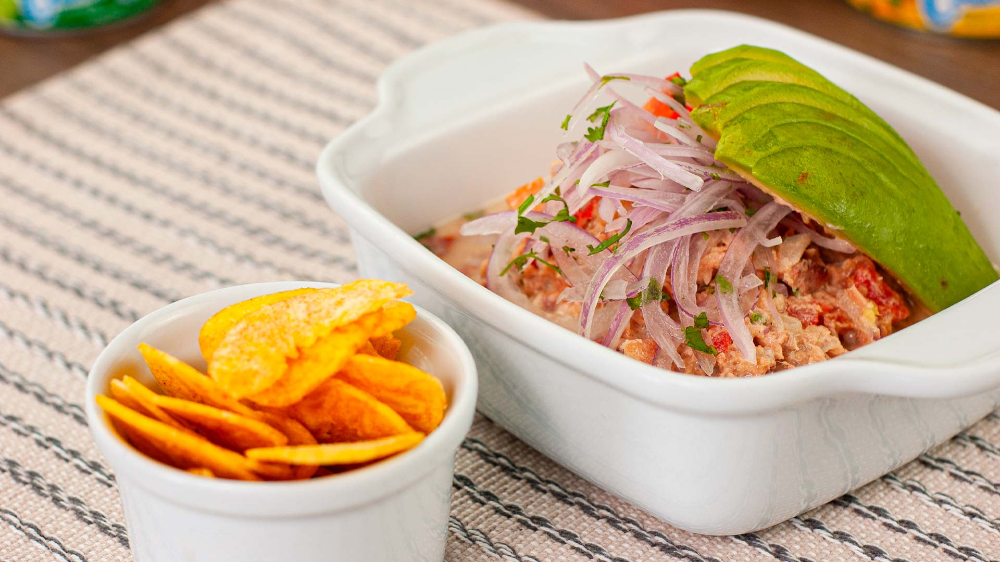

Ceviche

Description
Ceviche is a popular Latin American dish made from fresh raw fish marinated in citrus juices, such as lemon or lime, and spiced with chili peppers. The acid in the citrus juice “cooks” the fish, giving it a firm texture and opaque color. It’s often mixed with onions, cilantro, and other seasonings, and served cold as an appetizer or main dish.
Ingredients
- 1 pound of fres, skinless fillets
- 1 cup of fresh lime juice
- 1/2 cup of fresh lemon juice
- 1 medium red onion, finely sliced
- 1-2 jalapeño peppers, seeded and finely chopped
- 1 cup of chopped fresh cilantro
- 1-2 tomatoes, seeded and chopped
- Salt to taste
- Pepper to taste
- Optional: avocado, corn, or sweet potato for serving
Steps
- Prepare the Fish
- Marinate the Fish
- Prepare the Vegetables
- Combine Ingredients
- Serve